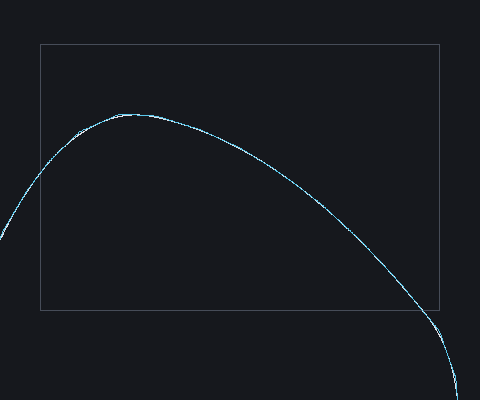
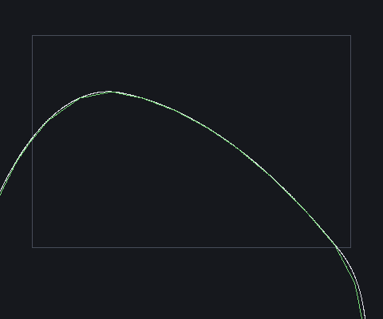
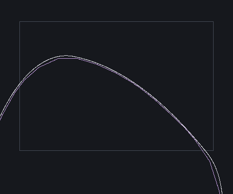
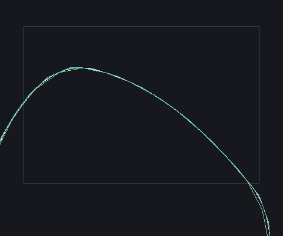
Static CPU renders. Slice panels draw the dense field contour (ground truth) under the mesh slice; shading is absent so a defect cannot hide behind it. Core rectangle = the window the distance metrics use.
■ DC baseline (cell*0.5 normals) ■ DC candidate (0.1*cell bounded) ■ marching cubes ■ surface nets ■ dense field contour (ground truth) ▢ core metric window





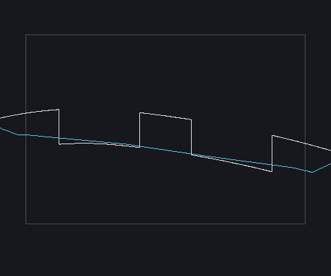
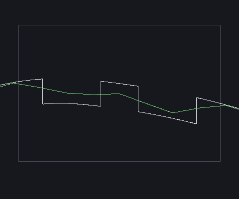
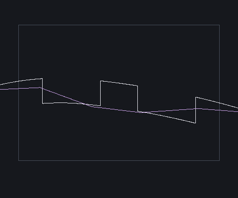
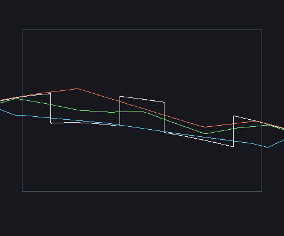

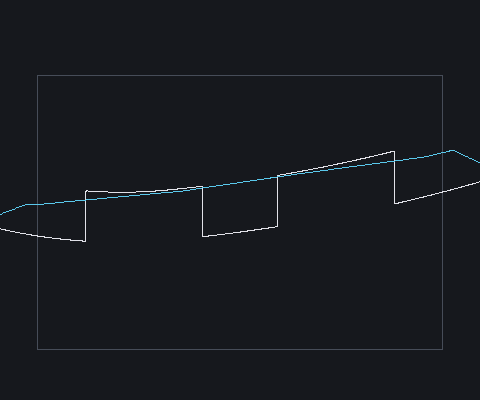
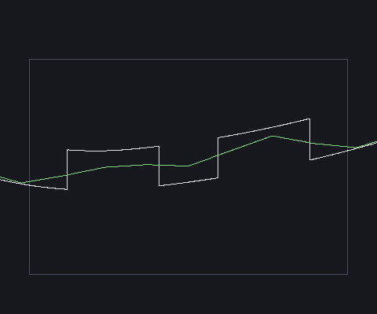
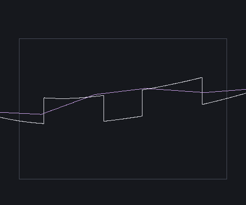
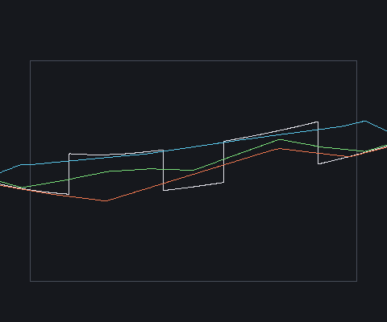

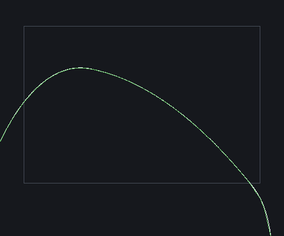
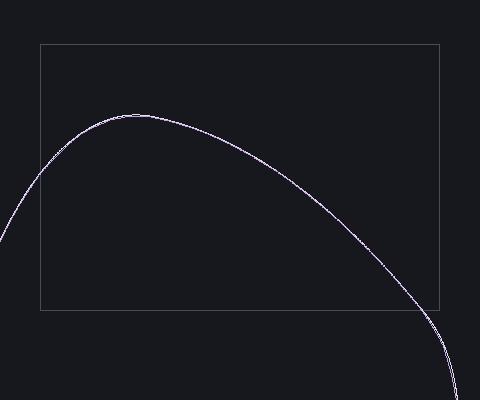
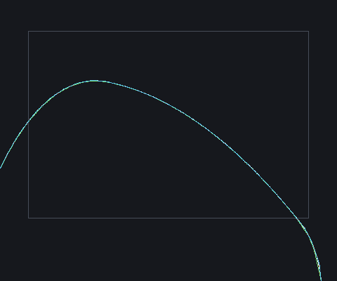

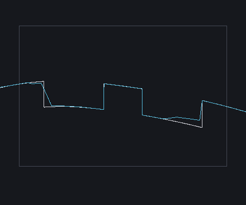
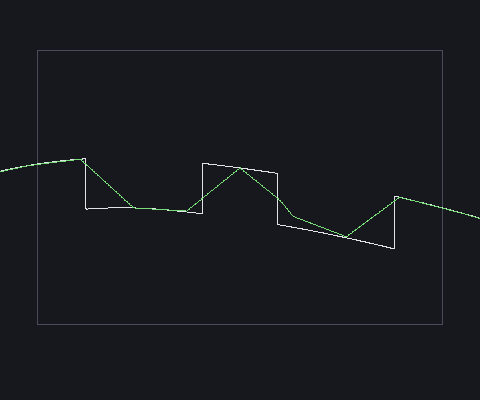
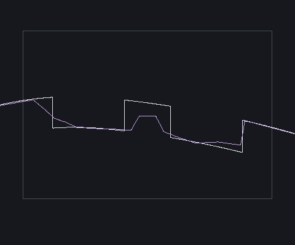
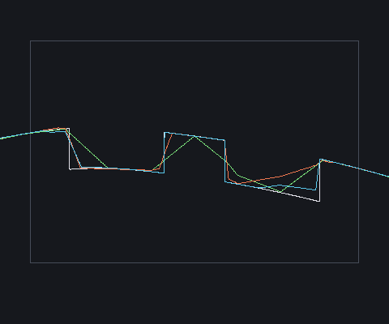

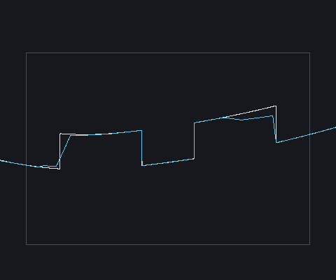
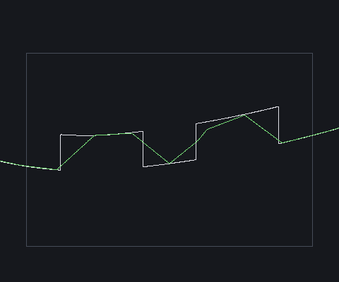
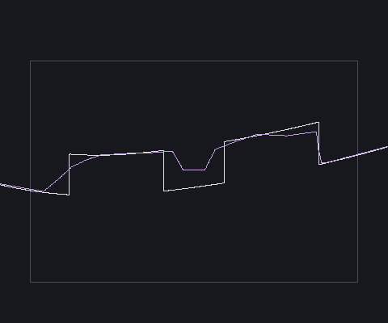
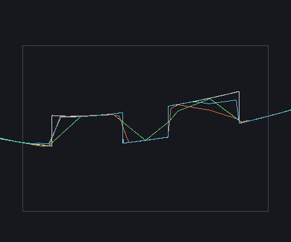

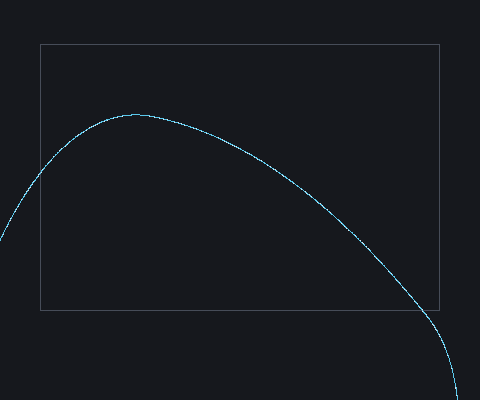
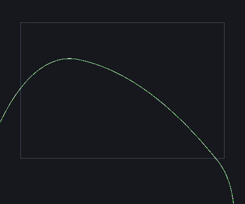
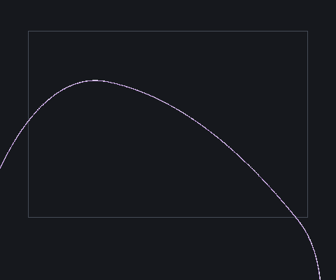
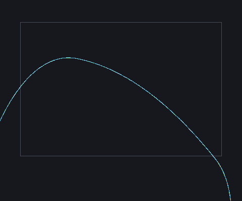

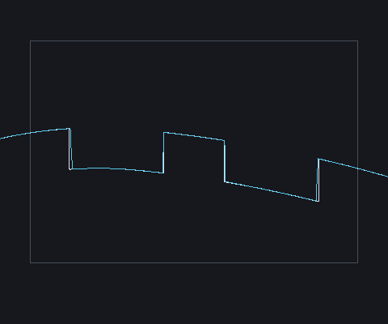
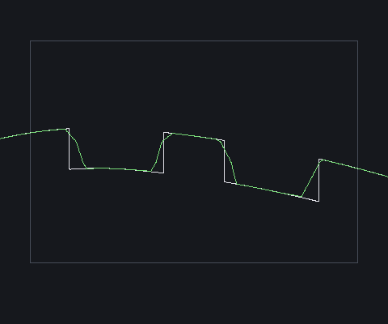
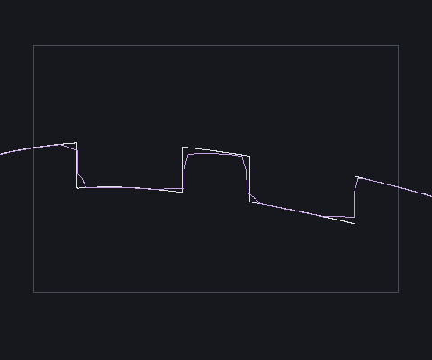
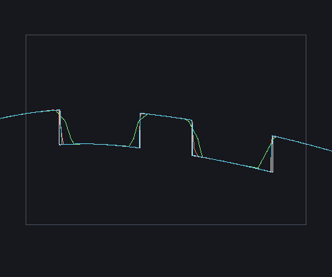

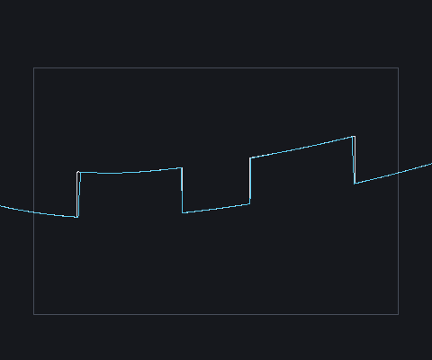
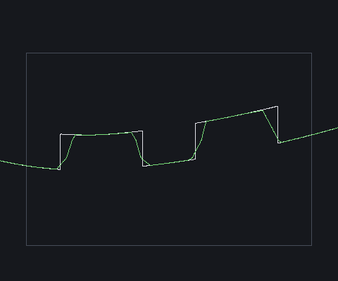
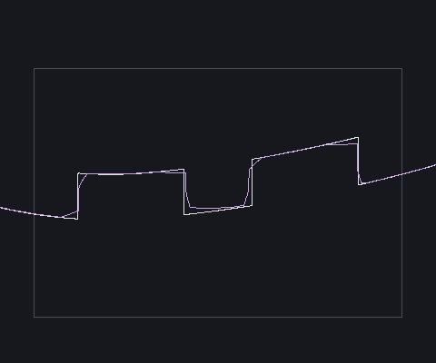
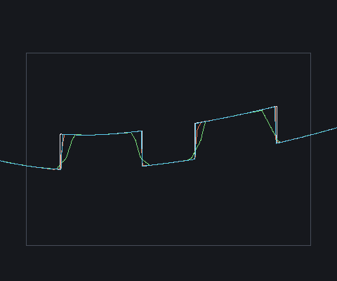


Nearest TRIANGLE SURFACE distance from the true box corner (mm). Axis-aligned phases are step-insensitive (three orthogonal planes); the 20° rotated row is where a normal-step change moves the answer, so it is measured per variant, not inferred from the axis-aligned results.
| cell mm | phase | rot° | baseline surf mm | candidate surf mm | baseline eps mm | candidate eps mm |
|---|---|---|---|---|---|---|
| 20 | [0,0,0] | 0 | 0.229 | 0.229 | 10.00 | 2.00 |
| 20 | [0.23,0,0] | 0 | 0.213 | 0.213 | 10.00 | 2.00 |
| 20 | [0,0.23,0] | 0 | 0.213 | 0.213 | 10.00 | 2.00 |
| 20 | [0,0,0.23] | 0 | 0.213 | 0.213 | 10.00 | 2.00 |
| 20 | [0.5,0.5,0.5] | 0 | 0.114 | 0.114 | 10.00 | 2.00 |
| 20 | [0.25,0.25,0.25] | 0 | 0.171 | 0.171 | 10.00 | 2.00 |
| 20 | [0,0,0] | 20 | 3.085 | 0.132 | 10.00 | 2.00 |
| 10 | [0,0,0] | 0 | 0.114 | 0.114 | 5.00 | 1.00 |
| 10 | [0.23,0,0] | 0 | 0.106 | 0.106 | 5.00 | 1.00 |
| 10 | [0,0.23,0] | 0 | 0.106 | 0.106 | 5.00 | 1.00 |
| 10 | [0,0,0.23] | 0 | 0.106 | 0.106 | 5.00 | 1.00 |
| 10 | [0.5,0.5,0.5] | 0 | 0.057 | 0.057 | 5.00 | 1.00 |
| 10 | [0.25,0.25,0.25] | 0 | 0.086 | 0.086 | 5.00 | 1.00 |
| 10 | [0,0,0] | 20 | 0.930 | 0.034 | 5.00 | 1.00 |
| 5 | [0,0,0] | 0 | 0.057 | 0.057 | 2.50 | 0.50 |
| 5 | [0.23,0,0] | 0 | 0.053 | 0.053 | 2.50 | 0.50 |
| 5 | [0,0.23,0] | 0 | 0.053 | 0.053 | 2.50 | 0.50 |
| 5 | [0,0,0.23] | 0 | 0.053 | 0.053 | 2.50 | 0.50 |
| 5 | [0.5,0.5,0.5] | 0 | 0.029 | 0.029 | 2.50 | 0.50 |
| 5 | [0.25,0.25,0.25] | 0 | 0.043 | 0.043 | 2.50 | 0.50 |
| 5 | [0,0,0] | 20 | 0.711 | 0.063 | 2.50 | 0.50 |
r2t p95 (mm) with the 0.2 mm reference vs a finer 0.1 mm reference. A stable candidate/baseline ratio is what lets the improvement be quoted.
| region | baseline 0.2 | baseline 0.1 | candidate 0.2 | candidate 0.1 | ratio 0.2 | ratio 0.1 |
|---|---|---|---|---|---|---|
| seam | 0.087 | 0.089 | 0.087 | 0.089 | 1.00x | 0.99x |
| notch-plus-z | 6.785 | 6.841 | 2.323 | 2.344 | 0.34x | 0.34x |
| notch-minus-z | 6.785 | 6.841 | 2.323 | 2.344 | 0.34x | 0.34x |